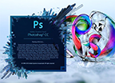
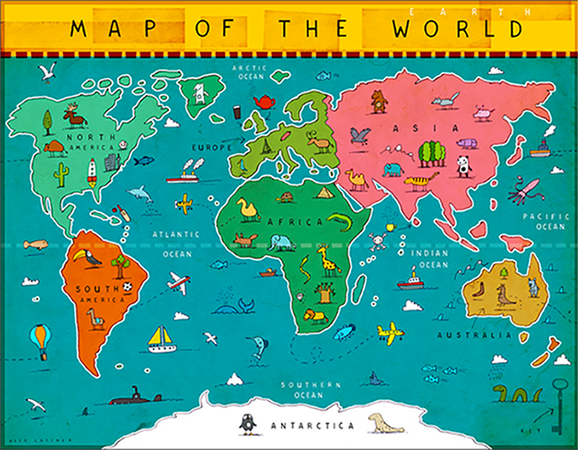

Within this project, we are asked to use a software graphics program of our choice. I choose to try Adobe Photoshop CC 2017. We are also asked to select several images as backgrounds and thumbnails, in order to modify using gamma corrections. With this being my first time using Adobe Photoshop to modify images, I found getting used to image adjustment features within the software to be a bit of a challenge. Understanding the software just as much as creating within the software seems to be equally challenging. I would recommend Adobe Photoshop CC 2017 to any individual that would like to develop experience using image modifications and/or image illustration. I would also recommend trying other graphics software programs in order to obtain experiences that can assist with web site development.
Within this project, we are asked to find a large image to be used as what is referred to as an "image map" image. With this being my first time using image mapping, learning exactly how to image map an image in a new graphics software was definitely a challenge. I sought explanation from a link provided in order to fully understand all the details that put together an overall imap map.  Initially, the different "shapes" requirement and "coords" drew a blank but I did my best to put together what I thought fufilled expectations. I also attempted to understand another links details, but resulted in an over complicated understanding letting me further realize my lack of experience with the new software graphics program I am using for trial. With the link provided, I learned how to use the graphics software features for image mapping as well as learning a cool way to put together my first image map image. This learning tool was one of the most educational for me. I look forward to gaining more experience with image mapping, especially with several different types of graphics softwares.
Within this project, we are asked to make image modifications to a couple of background images of our choice. The modifications to the background images are to be "Gamma Corrected". We are to choose a graphics software program to apply gamma corrections to our background images to give the images a "washed out" look. Applying the gamma corrections to my choice of background images was initially a bit confusing, but the end result broadened my understanding of the highlights brought about by gamma correcting. Within the requirements included image size adjustments as well, resizing several images into "thumbnail" image size adjustments. Several of my trials, adjusting the images size, resulted in a blurry appearance. After lots of trial and error, I decided on what appeared to be the most clear and fulfilled the required size adjustment.